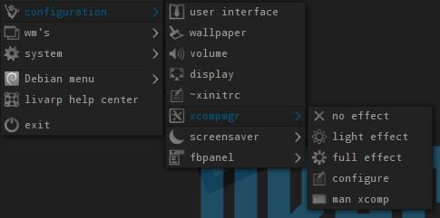

lang fr|gb

livarp menus
some window manager includes their own menu: vtwm, awesome, fluxbox, openbox & pekwm
to facilitate access to applications, livarp uses 2 independent menus:
dmenu
the universal dynamic menu available from all sessions with different keybinds.

fbpanel
includes a livarp menu with the Debian menu available in all sessions on top-left corner:



fbpanel is not auto-generated (you'll havo to add entry when you install apps), but a menu entry is here to let you edit the fbpanel profile located in our ~/.config/fbpanel/default.